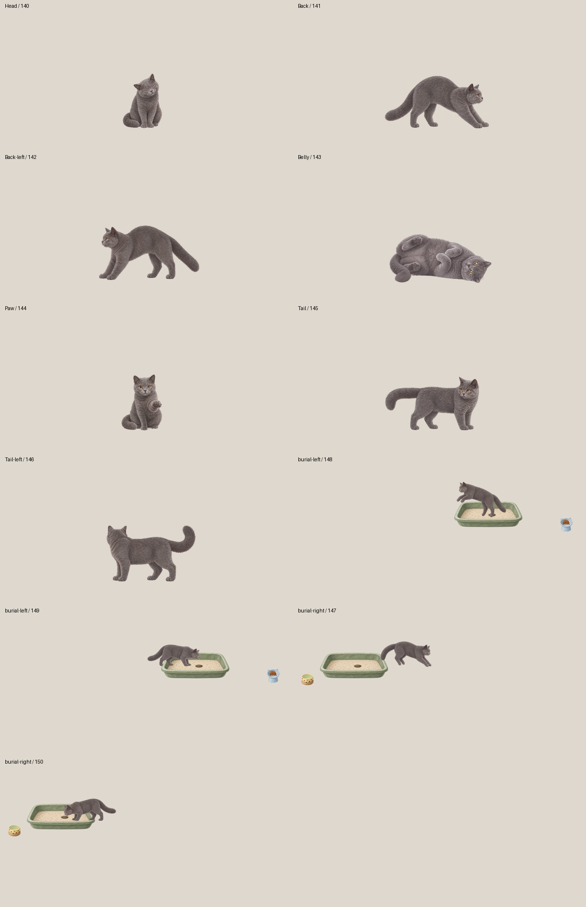
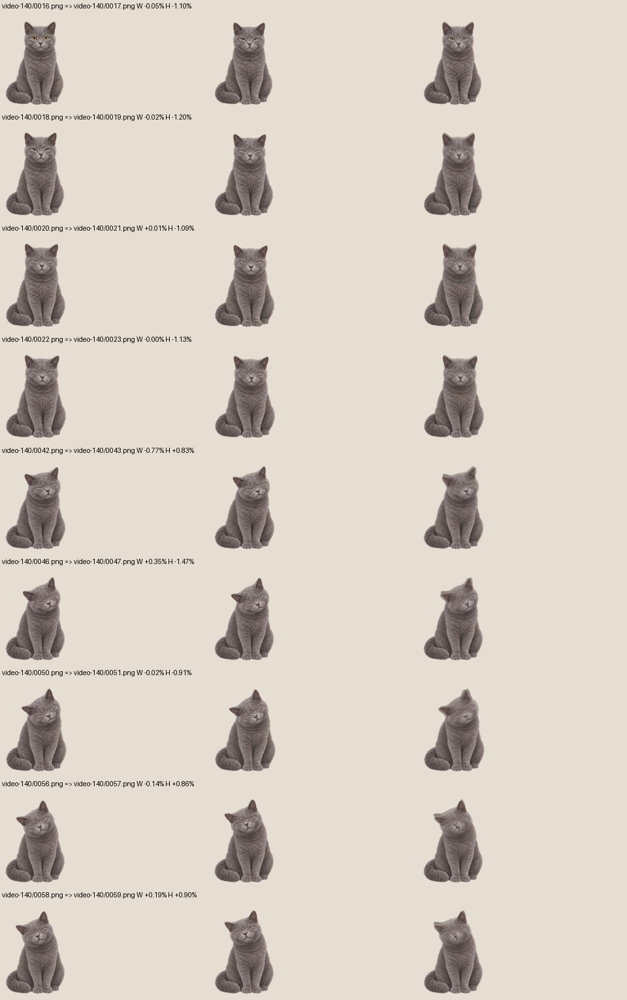
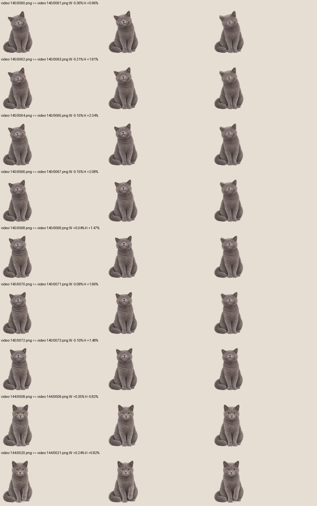
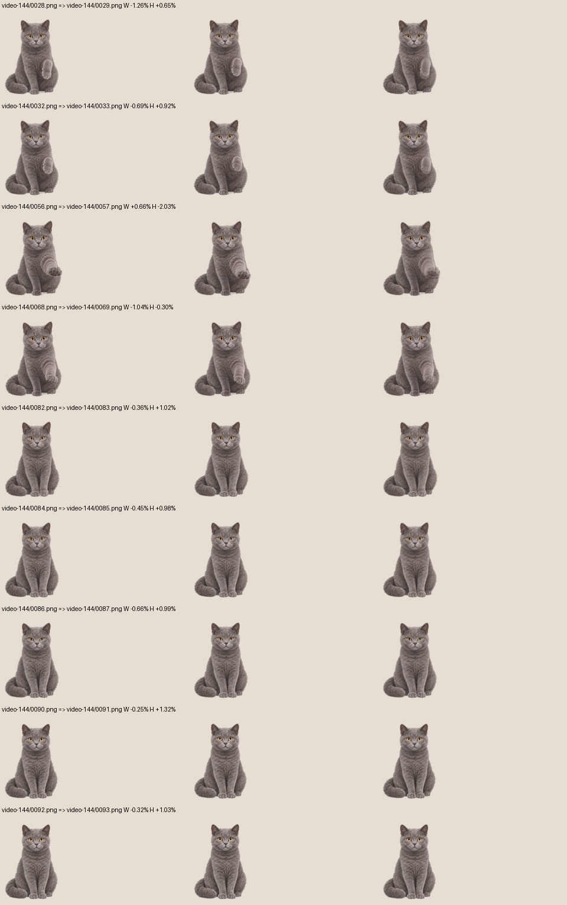

11 段、1,115 原帧、24 fps。五部位互动与跳出→回头走近→嗅闻→埋砂已接入。151／152 专用抓棒仍待返片；本轮未提交、未打发行包、未发布。
887 项共享回归通过；Windows / Mac 宿主本地编译通过。WPF 九个原生渲染场景中，11 段新片的所有原帧号完整播放；五部位及左右背/尾均有实际可见像素命中，透明点被排除。Mac 尚未进行本轮原生桌面验收，以上也不等同于系统鼠标端到端测试。
149 右嗅闻低头较浅，鼻尖比污物高约 35 逻辑像素；150 左嗅闻约 14。水平已分别按实际鼻尖校准，未压低或缩放整猫来掩盖高度。145 右向碰尾更像回头看向镜头，是否足够表达回望尾部仍待审。
逐帧尺寸检查共 2,394 帧、2,411 对，保留 405 处仿射阈值警报和 410 处复核提示，包含既有片段及非刚性姿态，不是美术全项通过。固定躯干补充检查 768 对，27 处警报集中在 140/144，590 对低置信度；滚身/跳跃需动态人工评审。下方保留前后及叠图，叠图只用于诊断，运行时仍绘制单帧。



